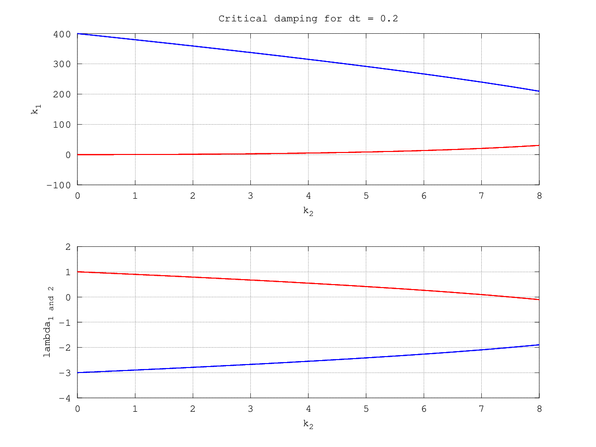

Second-order System and Its Control
Table of Contents
1 Goals
- Figure out the connection between a full-state feedback system dynamics and the mechanical system mechanics
- Figure out the connection between the feedback \(K\) and the time response
- Figure out the way to find the best \(K\)
2 Continuous-time second order system and its control
The continuous-time dynamics of interest is
\begin{eqnarray*} x_{next} &=& \begin{bmatrix} 0 & 1 \\ 0 & 0 \end{bmatrix} x + \begin{bmatrix} 0 \\ 1 \end{bmatrix} u \end{eqnarray*}We are particularly interested in a full-state feedback controller, such as \[ u = - K x \]
where \(K := [k_1 \; k_2]\), \(k_1\) and \(k_2\) is the feedback control gains. Such control is often called PD control, where \(k_1\) is the P (Proportional) gain, and \(k_2\) is the D (Derivative) gain.
Hereafter, we will study the closed-loop dynamics of such dynamics. It is interesting because we will find many systems in the real life have such dynamics, such as to control the position by controlling the acceleration, and etc.
The closed-loop system dynamics is determined by the eigenvalues of the state transition matrix: \(T := A - B K\). \[ T = \left[\begin{matrix}0 & 1\\- k_{1} & - k_{2}\end{matrix}\right] \] and its eigenvalues are (see Appendix 1): \[ \left[\begin{matrix}- \frac{k_{2}}{2} - \frac{\sqrt{- 4 k_{1} + k_{2}^{2}}}{2}\\- \frac{k_{2}}{2} + \frac{\sqrt{- 4 k_{1} + k_{2}^{2}}}{2}\end{matrix}\right] \]

Figure 1: Second-order mechanical system
Now let's look at a mass-spring-damper mechanics system as shown in Fig. 1. it's poles are given by \[ \left[\begin{matrix}- \frac{b}{2m} - \frac{\sqrt{- 4 mk + b^{2}}}{2m}\\- \frac{b}{2m} + \frac{\sqrt{- 4 mk + b^{2}}}{2m}\end{matrix}\right] \]
Compared with these two equations, we will find that the closed-loop feedback system dynamics is equivalent to the mass-spring-damper system as shown in Fig. 1, where \[ k = k_1 m \] \[ b = k_2 m \]
The damping radio \(\xi\) and natural frequency \(\omega_n\) of the mechanical system are given by: \[ \omega_n = \sqrt{\frac{k}{m}}\] and \[ \xi = \frac{b}{2\sqrt{km}} \]
Therefore, the damping radio \(\xi\) and natural frequency \(\omega_n\) in term of \(k_1\) and \(k_2\) are given by: \[ \omega_n = \sqrt{k_1} \] and \[ \xi = \frac{k_2}{2\sqrt{k_1}} \]
This can explain why the higher the P gain, the faster it oscillates. The higher the D gain, the faster it decays.
There are four classes of pole locations in term of the feedback gains 1:
- First, if \(\xi= 0\), the system is undamped, it will oscillate at natural frequency.
- If \(0 < \xi < 1\), the system is underdamped.
- If \(\xi = 1\), the system is critically damped.
- Finally, \(\xi > 1\), the system is overdamped.
For mass-spring-damper system, it is easy to prove that the magnitudes of eigenvalues are always negative. Therefore, it is always stable.
3 Discrete-time second order system and its control
The discrete time dynamics of interest is
\begin{eqnarray*} x_{next} &=& \begin{bmatrix} 1 & dt \\ 0 & 1 \end{bmatrix} x + \begin{bmatrix} \frac{1}{2} dt^2 \\ dt \end{bmatrix} u \\ u &=& - \begin{bmatrix} k_1 & k_2 \end{bmatrix} x \end{eqnarray*}The closed-loop system dynamics (aka Homogeneous DE) becomes (see Appendix 2 for octave code): \[ x_{next} = (A - B K) x \] The system response is determined by the poles of \(A - B K\), which are:
\begin{equation} \lambda_1 = 1 - \frac{dt^{2} k_{1}}{4} - \frac{dt k_{2}}{2} - \frac{\sqrt{dt^{2} \left(dt^{2} k_{1}^{2} + 4 dt k_{1} k_{2} - 16 k_{1} + 4 k_{2}^{2}\right)}}{4} \end{equation} \begin{equation} \lambda_2 = 1 - \frac{dt^{2} k_{1}}{4} - \frac{dt k_{2}}{2} + \frac{\sqrt{dt^{2} \left(dt^{2} k_{1}^{2} + 4 dt k_{1} k_{2} - 16 k_{1} + 4 k_{2}^{2}\right)}}{4} \end{equation}
Figure 2: Mapping for constant normalized frequencies \(\omega_n T\)

Figure 3: Mapping for constant damping \(\xi\)

Figure 4: Pole in z-plane and its time response
Refer to 2
The stability of the closed-loop system is determined by the magnitudes of both eigenvalues.

Figure 5: the first pole's magnitude when \(T=0.1\)

Figure 6: the second pole's magnitude when \(T=0.1\)

Figure 7: the second pole's \(\theta\) when \(T=0.1\)

Figure 8: Black is unstable region, gray is stable w/ oscillate region, and white is stable w/o oscillation region when \(T=0.1\).

Figure 9: Regions with different time step. Black is unstable region, gray is stable w/ oscillate region, and white is stable w/o oscillation region.

Figure 10: Gains, poles and time response when \(T=0.1\)
4 Discrete-time second order system critical damping
Critical damping occurs when the two eigen values are equal, therefore, we need to solve \[ \frac{dt^{2} k_{1}^{2}}{4} + dt k_{1} k_{2} - 4 k_{1} + k_{2}^{2} = 0 \]
The solutions are
\begin{equation} k_1 = \frac{- 2 dt k_{2} - 4 \sqrt{- 2 dt k_{2} + 4} + 8}{dt^{2}} \end{equation}or
\begin{equation} k_1 = \frac{- 2 dt k_{2} + 4 \sqrt{- 2 dt k_{2} + 4} + 8}{dt^{2}} \end{equation}and the corresponding eigenvalues are
\begin{equation} \lambda_1 = \lambda_2 = \sqrt{- 2 dt k_{2} + 4} - 1 \end{equation}and
\begin{equation} \lambda_1 = \lambda_2 = - \sqrt{- 2 dt k_{2} + 4} - 1 \end{equation}
Figure 11: \(k_1\) and its corresponding eigenvalue as a function of \(k_2\) for \(dt=0.2\)
As we can see in Fig. 11 only one of these solutions gives a system that is stable and without oscillation, The stable eigenvalue is:
\begin{equation} \lambda_1 = \lambda_2 = \sqrt{- 2 dt k_{2} + 4} - 1 \end{equation}There is a special case, where both eigenvalues become zero. The corresponding gains are: \(k_1 = 1 / dt^2\) and \(k_2 = 3/(2dt)\) .
5 Appendix 1
Octave code to calculate continuous-time system's poles in s-plant
%% Dependencies: %% Octave 4.0.0 %% %% Package Name | Version %% --------------+--------- %% geometry | 2.1.1 %% symbolic | 2.7.1 clear all %%%%%%%%%%%%%%%%%%%%%%%%%%%%%%%%%%%%%%%%%%%%%%%%%%%%%%%%%%%%%%%%%%%%%%%%%%%%%%%% % Load packages %%%%%%%%%%%%%%%%%%%%%%%%%%%%%%%%%%%%%%%%%%%%%%%%%%%%%%%%%%%%%%%%%%%%%%%%%%%%%%%% pkg load symbolic; pkg load geometry; %%%%%%%%%%%%%%%%%%%%%%%%%%%%%%%%%%%%%%%%%%%%%%%%%%%%%%%%%%%%%%%%%%%%%%%%%%%%%%%% % Constant variables %%%%%%%%%%%%%%%%%%%%%%%%%%%%%%%%%%%%%%%%%%%%%%%%%%%%%%%%%%%%%%%%%%%%%%%%%%%%%%%% global saving_foler visualize visualize = false; saving_foler = '/tmp/output'; %% don't change this mkdir("/tmp", "output"); %%%%%%%%%%%%%%%%%%%%%%%%%%%%%%%%%%%%%%%%%%%%%%%%%%%%%%%%%%%%%%%%%%%%%%%%%%%%%%%% % Utility functions %%%%%%%%%%%%%%%%%%%%%%%%%%%%%%%%%%%%%%%%%%%%%%%%%%%%%%%%%%%%%%%%%%%%%%%%%%%%%%%% function x_new = dynamics(x, u, dt_s) A = [1 dt_s; 0 1]; B = [0.5 * dt_s^2; dt_s]; x_new = A * x + B * u; end function u = PD_controller(x, K) u = - K * [x(1) x(2)]'; end function traj = sim_tvc(x0, controller, duration, dt_s) %% time varying controller time = 0; x = x0; traj = []; time_step = 0; while time < duration u = controller(x, time_step); traj = [traj; time x' u']; x = dynamics(x, u, dt_s); time = time + dt_s; time_step += 1; end end function traj = sim(x0, controller, duration, dt_s) time = 0; x = x0; traj = []; while time < duration u = controller(x); traj = [traj; time x' u']; x = dynamics(x, u, dt_s); time = time + dt_s; end end function show_traj(traj) plot(traj(:,1), traj(:,2:end), "LineWidth", 3); legend('position', 'speed', 'u') xlim([0 10]); xlabel("Time [s]") ylabel("States"); title("Time response"); end function [LL, T] = get_system_eigenvalues() %% general second-order discrete-time state system syms a1 a2 a3 a4 b1 b2 k1 k2 dt A = [a1 a2; a3 a4] B = [b1; b2] K = [k1 k2] T = A - B * K; LL = eig(A - B*K); %% Specialize LL= simplify(subs(LL, {a1, a2, a3, a4, b1, b2}, {1, dt, 0, 1, dt^2/2, dt})); %% Specialize T= simplify(subs(T, {a1, a2, a3, a4, b1, b2}, {1, dt, 0, 1, dt^2/2, dt})); end function plot_poles_gains(lambda1, lambda2, dt_s, k1, k2) %% Function to plot system pole for a given dt_x, k1, and k2 %% @params : lambda1 and lambda2 are functions of dt_s, k1, k2 global K1 K2 STABLE_REGION clf p1 = lambda1(dt_s, k1, k2); p2 = lambda2(dt_s, k1, k2); subplot(2,2,1); if size(STABLE_REGION, 1) > 0 h = pcolor(K1, K2, STABLE_REGION); set(h, 'EdgeColor', 'none'); colormap('gray'); hold on; end plot(k1, k2, "*", "LineWidth", 3); xlabel("k1"); ylabel("k2"); xlim([0 120]); ylim([0 25]); title("K selection"); subplot(2,2,2); drawCircle(0,0,1.0); hold on plot(real(p1), imag(p1), "*", "LineWidth", 3, real(p2), imag(p2), "*", "LineWidth", 3); grid on; axis equal xlim([-2 2]); ylim([-2 2]); title(sprintf("Poles at k1 = %.1f k2= %.1f", k1, k2)) %% Time response x0 = [1 0]'; controller = @(x) PD_controller(x, [k1 k2]); traj = sim(x0, controller, 10.0, dt_s); subplot(2,2,3:4); show_traj(traj); end function plot_multiple_poles_gains(lambda1, lambda2, dt_s, k1_list, k2_list, visualize = true, prefix='') %% lambda1 and lambda2 are functions of k1, k2, where K = [k1 k2] global saving_foler idx = 0; if !visualize h = gcf(); set(h, 'visible','off') end for k1 = k1_list for k2 = k2_list plot_poles_gains(lambda1, lambda2, dt_s, k1, k2); if visualize refresh() %% drawnow() pause(0.2) else filename = sprintf("%s/%s%05d.png", saving_foler, prefix, idx); print(filename) end idx = idx + 1; end end end function plot_stable_region(lambda1, lambda2, dt_s, visualize) nk1 = 0:0.5:120; nk2 = 0:0.1:25; [K1, K2] = meshgrid(nk1,nk2); L1 = lambda1(dt_s, K1, K2); L2 = lambda2(dt_s, K1, K2); %% unstable region mask abs_mask = abs(L1) > 1 | abs(L2) > 1.0; %% underdamping region mask arg_mask = abs(arg(L1)) > 0 | abs(arg(L2)) > 0; STABLE_REGION = zeros(size(K1)); STABLE_REGION(!abs_mask) = 0.5; STABLE_REGION(!arg_mask) = 1.0; if !visualize h = gcf(); set(h, 'visible','off') end clf h = pcolor(K1, K2, STABLE_REGION); set(h, 'EdgeColor', 'none'); colormap('gray'); xlabel("k1"); ylabel("k2"); title(sprintf("Stable and underdamped region when dt = %0.3f", dt_s)); end %%%%%%%%%%%%%%%%%%%%%%%%%%%%%%%%%%%%%%%%%%%%%%%%%%%%%%%%%%%%%%%%%%%%%%%%%%%%%%%% % Prepare for plotting %%%%%%%%%%%%%%%%%%%%%%%%%%%%%%%%%%%%%%%%%%%%%%%%%%%%%%%%%%%%%%%%%%%%%%%%%%%%%%%% [LL, T] = get_system_eigenvalues(); %% Convert to function for plotting lambda1 = function_handle(LL(1)) lambda2 = function_handle(LL(2)) %% variables for plotting dt_s = 0.2; nk1 = 0:0.5:120; nk2 = 0:0.1:25; global K1 global K2 [K1, K2] = meshgrid(nk1,nk2); L1 = lambda1(dt_s, K1, K2); L2 = lambda2(dt_s, K1, K2); %% unstable region mask abs_mask = abs(L1) > 1 | abs(L2) > 1.0; %% underdamping region mask arg_mask = abs(arg(L1)) > 0 | abs(arg(L2)) > 0; global STABLE_REGION; STABLE_REGION = zeros(size(K1)); STABLE_REGION(!abs_mask) = 0.5; STABLE_REGION(!arg_mask) = 1.0; ################################################################################ # critical damping ################################################################################ syms dt k1 k2 f1 = (LL(1) - LL(2) ) ^ 2 f2 = (LL(1) + LL(2) ) / 2; ## k1 in term of k2 when critical damping occurs ## the solution is not unique, but only the first one give stable system k1_k2 = solve(f1 == 0, k1) ## the eigen values in term of k2 when critical damping occurs lambda_k2 = subs(f2, k1, k1_k2) dt_s = 0.2; fun_lambda = @(k2) function_handle(lambda_k2)(dt_s, k2) fun_k1 = @(k2) function_handle(k1_k2)(dt_s, k2) k2 = 0:0.1:8; close all figure(1) subplot(2,1,1); plot(k2, fun_k1(k2)(1,:), "-r", "LineWidth", 3); hold on plot(k2, fun_k1(k2)(2,:), "-b", "LineWidth", 3); grid on title("Critical damping for dt = 0.2") xlabel("k_2") ylabel("k_1") subplot(2,1,2); plot(k2, fun_lambda(k2)(1,:), "-r", "LineWidth", 3); hold on plot(k2, fun_lambda(k2)(2,:), "-b", "LineWidth", 3); grid on xlabel("k_2") ylabel("\lambda") saveas(1, "critical_damping.png") ################################################################################ ## plots ################################################################################ h = figure(); if !visualize set(h, 'visible','off') end clf [c h] = contourf(K1, K2, abs(L1), 0:0.2:2); colorbar(); clabel (c, h, 0:0.2:2, "fontsize", 12); xlabel("k1"); ylabel("k2"); title("The first pose's magnitude"); grid on if !visualize print(sprintf("%s/first_pole_abs.png", saving_foler)); end h = figure(); if !visualize set(h, 'visible','off') end clf [c h] = contourf(K1, K2, abs(L2), 0:0.2:2); colorbar(); clabel (c, h, 0:0.2:2, "fontsize", 12); xlabel("k1"); ylabel("k2"); title("The second pose's magnitude"); grid on if !visualize print(sprintf("%s/second_pole_abs.png", saving_foler)); end h = figure(); if !visualize set(h, 'visible','off') end clf [c, h] = contourf(K1, K2, arg(L2)); colorbar(); xlabel("k1"); ylabel("k2"); title("The second pose's angle"); grid on; if !visualize print(sprintf("%s/second_pole_arg.png", saving_foler)); end %% Stable region h = figure(); if !visualize set(h, 'visible','off') end clf A1 = abs(L1); A1(abs_mask) = 3; h = pcolor(K1, K2, A1); set(h, 'EdgeColor', 'none'); colorbar(); xlabel("k1"); ylabel("k2"); title("Stable region abs(Lambda_1)"); if !visualize print(sprintf("%s/stable_region_first_pole_abs.png", saving_foler)); end h = figure(); if !visualize set(h, 'visible','off') end clf A1 = abs(L2); A1(abs_mask) = 3; h = pcolor(K1, K2, A1); set(h, 'EdgeColor', 'none'); colorbar(); xlabel("k1"); ylabel("k2"); title("Stable region abs(Lambda_2)"); grid on if !visualize print(sprintf("%s/stable_region_second_pole_abs.png", saving_foler)); end h = figure(); if !visualize set(h, 'visible','off') end clf A1 = arg(L2); A1(abs_mask) = pi; h = pcolor(K1, K2, A1); set(h, 'EdgeColor', 'none'); colorbar(); xlabel("k1"); ylabel("k2"); title("Stable region arg(Lambda_2)"); if !visualize print(sprintf("%s/stable_region_second_pole_arg.png", saving_foler)); end h = figure(); plot_stable_region(lambda1, lambda2, dt_s, visualize); if !visualize print(sprintf("%s/stable_region.png", saving_foler)); end h = figure(); dt_s = 0.2; k1s = 100; k2s = 0:0.5:21; plot_multiple_poles_gains(lambda1, lambda2, dt_s, k1s, k2s, visualize, 'dt02_k100_'); k1s = 20; k2s = 0:0.5:21; plot_multiple_poles_gains(lambda1, lambda2, dt_s, k1s, k2s, visualize, 'dt02_k20_'); k1s = 10; k2s = 0:0.5:21; plot_multiple_poles_gains(lambda1, lambda2, dt_s, k1s, k2s, visualize, 'dt02_k10_'); %% Plot stable region changed with time disp("Plot stable region changed with dt"); index = 0; for dt_s = 0.01:0.01:0.2 plot_stable_region(lambda1, lambda2, dt_s, false); print(sprintf("%s/stable_region_%05d.png", saving_foler, index)); index = index + 1; end